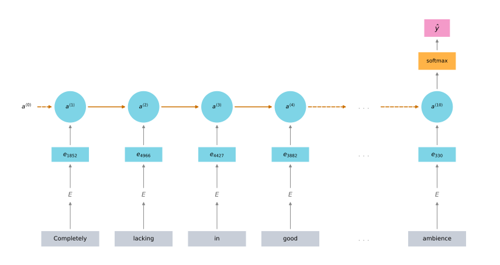
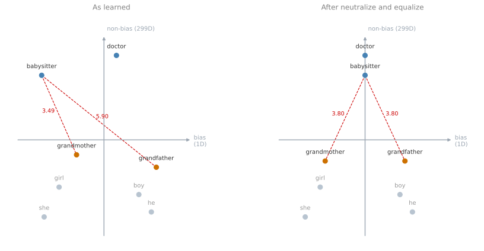

Sentiment Classification and Debiasing Word Embeddings
deep-learning
sequence-models
nlp
word-embeddings
sentiment-classification
bias
fairness
Two applications of word embeddings, a sentiment classifier that works from a small labeled set, and a method for removing gender bias from the embeddings.
With the embedding matrix \(E\) learned or downloaded, word embeddings can be put to work. This page covers two applications. The first is sentiment classification, where embeddings make a good classifier possible from a small labeled training set. The second is a method for reducing the bias that embeddings pick up from the text they were trained on.
Sentiment Classification
Sentiment classification is the task of looking at a piece of text and telling whether someone likes or dislikes the thing they are talking about. It is one of the most important building blocks in NLP and is used in many applications.
The input \(x\) is a piece of text and the output \(y\) to predict is the sentiment, such as the star rating of a restaurant review.
| Review text, \(x\) | Rating, \(y\) |
|---|---|
| The dessert is excellent. | 4 stars |
| Service was quite slow. | 2 stars |
| Good for a quick meal, but nothing special. | 3 stars |
| Completely lacking in good taste, good service, and good ambience. | 1 star |
Train a system to map from \(x\) to \(y\) on a labeled dataset like this, and you can use it to monitor what people say about a restaurant you run. People post about restaurants on social media, on Twitter, Facebook, Instagram, and elsewhere. A sentiment classifier can look at a piece of text and work out how positive or negative the poster feels, which lets you track whether there are problems and whether things are getting better or worse over time.
One of the challenges is that you might not have a huge labeled dataset. Training sets anywhere from 10,000 to 100,000 words would not be uncommon for a sentiment classification task, and sometimes even smaller than 10,000 words. This is exactly where word embeddings help, because they carry knowledge learned elsewhere into a problem with a small training set.
Simple Averaging Model
Take a sentence like The dessert is excellent and look up those words in the usual 10,000-word dictionary. The word The is 8928, dessert is 2468, is is 4694, and excellent is 3180. Build a classifier to map this to the output \(y\), which was four stars.
For each of the four words, take the one-hot vector and multiply by the embedding matrix \(E\), which was learned from a much larger text corpus, perhaps a billion words or a hundred billion. That is what lets the model pick up knowledge about even infrequent words and apply it here, including words that never appeared in the labeled training set.
Now take those vectors, say 300-dimensional ones, and just sum or average them. That gives a 300-dimensional feature vector, which you pass to a softmax classifier that outputs \(\hat{y}\), the probabilities of the five possible outcomes from one star up to five stars.
On a small screen, scroll horizontally to see the full model.
Notice what the averaging step buys. This algorithm works for reviews that are short or long, because even for a review that is 100 words long you can sum or average all 100 feature vectors and still end up with a single 300-dimensional representation to pass into the classifier. What it does is average the meanings of all the words in the example.
This works decently well, but it has a real problem. It ignores word order. Look again at the harshest review.
Completely lacking in good taste, good service, and good ambience.
That is a one-star review, but the word good appears three times. An algorithm that ignores word order and just sums or averages the embeddings ends up with a lot of good in the final feature vector, and the classifier will probably decide this is a positive review when it is actually very harsh.
RNN for Sentiment Classification
A more sophisticated model replaces the sum with a recurrent network. Take the same review, find the one-hot vector for each word, multiply by the embedding matrix \(E\) to get the embedding vectors, and feed those into an RNN. The job of the RNN is to compute a representation at the last time step that allows it to predict \(\hat{y}\). This is an example of the many-to-one architecture from the previous week.
On a small screen, scroll horizontally to inspect all the time steps.

An algorithm like this is much better at taking word sequence into account. It can realize that lacking in good taste is a negative review and that not good is negative, unlike the previous algorithm, which sums everything into one big word-vector mush and does not notice that not good means something very different from good.
Train this and you end up with a pretty decent sentiment classifier. Because the word embeddings can be trained on a much larger dataset, it also generalizes better to words that were never in the labeled training set. If someone writes Completely absent of good taste, good service, and good ambience, then even if absent never appeared in the labeled sentiment data, it may have appeared in the billion or hundred billion word corpus used to train the embeddings, and if it did, the model might still get this right.
Once you have learned or downloaded a word embedding, it lets you build a pretty effective NLP system quite quickly.
Review Questions
1. Why do word embeddings matter so much for sentiment classification specifically?
Answer
Because the labeled data is usually small. A sentiment training set of 10,000 to 100,000 words, or even smaller, is common. The embedding was trained separately on perhaps a hundred billion words of unlabeled text, so it carries in knowledge about words the labeled set barely covers or never covers at all.
1. Why does averaging the embeddings let the same classifier handle both a four-word review and a hundred-word one?
Answer
Because the average of any number of 300-dimensional vectors is still a single 300-dimensional vector. The classifier always sees the same input size regardless of how long the review was, so review length never changes the shape of the model.
1. The review “Completely lacking in good taste, good service, and good ambience” is one star. What does the averaging model predict, and why?
Answer
It will probably predict a positive rating, which is wrong. Averaging throws away word order, and good appears three times in this sentence, so \(e_{\text{good}}\) dominates the averaged feature vector. The model never sees that each good is governed by lacking in.
1. You download a pre-trained word embedding built from a huge corpus, then use it to train an RNN to recognize whether someone is happy from a short snippet of text, using this small labeled training set.
| \(x\) (input text) | \(y\) (happy?) |
|---|---|
| Having a great time! | 1 |
| I am sad it is raining. | 0 |
| I am feeling awesome! | 1 |
Even though the word wonderful does not appear anywhere in that training set, what label would you reasonably expect for the input “I feel wonderful!”?
\(y = 1\)
\(y = 0\)
Answer
a. The word wonderful never appears in the labeled set, but the embedding matrix was learned from a far larger corpus in which it does. A word embedding algorithm places words that appear in similar contexts near each other, so wonderful should land near words such as great and awesome, and this training set labels both of those 1. Because the classifier reads embeddings rather than raw words, it can act on that similarity without ever having been shown wonderful itself.
Bias in Word Embeddings
Machine learning and AI algorithms are increasingly trusted to help with, or to make, extremely important decisions. It matters that they are as free as possible of undesirable forms of bias, such as gender bias and ethnicity bias.
ImportantDifferent sense of the word bias
Throughout this section, bias does not mean the bias-variance sense used elsewhere in machine learning. It means gender, ethnicity, and sexual orientation bias. That is a different sense of the word from the one used in most technical discussion of machine learning.
Earlier you saw that word embeddings learn analogies such as man is to woman as king is to queen. But ask a different one. Man is to computer programmer as woman is to what? Bolukbasi et al. (2016) found a somewhat horrifying result, that a learned word embedding might output Man:Computer_Programmer as Woman:Homemaker. That is simply wrong, and it reinforces an unhealthy gender stereotype. It would be far preferable for the algorithm to answer that man is to computer programmer as woman is to computer programmer. They also found Father:Doctor as Mother:Nurse, another unfortunate result.
| Analogy asked | What a learned embedding returned | |
|---|---|---|
| Man:Woman as King:? | Queen | Fine |
| Man:Computer_Programmer as Woman:? | Homemaker | Wrong |
| Father:Doctor as Mother:? | Nurse | Wrong |
Word embeddings can reflect the gender, ethnicity, age, sexual orientation, and other biases of the text used to train the model. The biases they pick up tend to reflect the biases in text as written by people.
This matters because learning algorithms are influencing everything ranging from college admissions, to the way people find jobs, to loan applications and whether an application gets approved, to the criminal justice system and even sentencing guidelines. Bias relating to socioeconomic status belongs on that list too. Every person, whether they come from a wealthy family or a low income family or anywhere in between, should have great opportunities.
Over many decades and many centuries, humanity has made progress in reducing these types of bias. Fortunately for AI, there are arguably better ideas for quickly reducing bias in AI than for quickly reducing bias in the human race, although that work is by no means done and a great deal of research remains.
What follows is one set of ideas for reducing bias in word embeddings, in three steps. Gender is the illustrating example, but the ideas apply to the other types of bias as well.

Identifying the Bias Direction
The first step is to identify the direction corresponding to the particular bias you want to reduce or eliminate. For gender, take the embedding vector for he and subtract the embedding vector for she, because those differ by gender. Take \(e_{\text{male}}\) minus \(e_{\text{female}}\). Take a few of these differences and average them.
\[\text{bias direction} \approx \text{average of } \left( e_{\text{he}} - e_{\text{she}},\ e_{\text{male}} - e_{\text{female}},\ \ldots \right)\]
That average points along the gender direction, which is the bias direction. Everything perpendicular to it is unrelated to the bias being addressed, so that is the non-bias direction. In this example the bias direction is a 1-dimensional subspace, and the non-bias direction is a 299-dimensional subspace.
NoteSimplification in this description
The original paper is a little more careful than the description above. The bias direction can be higher than 1-dimensional, and rather than taking an average it is found using singular value decomposition, which is closely related to and uses ideas similar to principal component analysis.
Neutralize
The second step is neutralization. For every word that is not definitional, project it to get rid of bias.
Some words intrinsically capture gender. In grandmother, grandfather, girl, boy, she, and he, gender is part of the definition. Grandmothers are female and grandfathers are male, by definition, so those words have a legitimate gender component. Other words such as doctor and babysitter should be gender neutral. In the more general case you might want doctor or babysitter to be ethnicity neutral or sexual orientation neutral as well.
So for words like doctor and babysitter, project them onto the non-bias axis, which reduces or eliminates their component in the bias direction. In the figure that means sliding them horizontally onto the vertical axis.
Equalize Pairs
The third step is equalization. You have pairs of words such as grandmother and grandfather, or girl and boy, where the only difference in their embeddings should be gender.
Why bother? Look at the left panel of the figure. The distance between babysitter and grandmother is smaller than the distance between babysitter and grandfather. That reinforces an undesirable bias, the suggestion that grandmothers end up babysitting more than grandfathers.
So in the equalization step, the goal is to make sure that words like grandmother and grandfather are exactly the same distance from words that should be gender neutral, such as babysitter or doctor. There are a few linear algebra steps involved, and what they amount to is moving grandmother and grandfather to a pair of points equidistant from the middle axis. The effect, shown in the right panel, is that the distance from babysitter to each of the two is now exactly the same.
There are many pairs like this that you might want to put through equalization.
| Pairs to equalize |
|---|
| grandmother and grandfather |
| girl and boy |
| sorority and fraternity |
| girlhood and boyhood |
| sister and brother |
| niece and nephew |
| daughter and son |
Deciding Which Words to Neutralize
One detail remains. How do you decide which words to neutralize?
The word doctor seems like a word that should be neutralized, to make it non-gender-specific and non-ethnicity-specific. The words grandmother and grandfather should not be made non-gender-specific. And there are words like beard, where it is a statistical fact that men are much more likely to have beards than women, so perhaps beard should stay closer to male than to female.
What the authors did is train a classifier to work out which words are definitional, meaning which words should be gender-specific and which should not. It turns out that most words in the English language are not definitional, in the sense that gender is not part of their definition. Only a relatively small subset, words like grandmother and grandfather, girl and boy, sorority and fraternity, should be left alone. So a linear classifier can tell you which words to pass through the neutralization step, projecting out the bias direction onto that 299-dimensional subspace. The number of pairs to equalize is also relatively small, and at least for the gender example it is quite feasible to hand-pick most of them.
The full algorithm is more complicated than what is presented here, and the paper has the details.
Reducing or eliminating bias in learning algorithms is an important problem, because those algorithms are being asked to help with or to make more and more important decisions in society. What is above is one set of ideas for going about it, and this remains very much an ongoing area of active research.
Review Questions
1. In this section, what does the word bias mean, and what does it not mean?
Answer
It means gender, ethnicity, sexual orientation, age, and similar social biases picked up from the training text. It does not mean the bias-variance sense used in most technical discussion of machine learning. The word is doing completely different work here.
1. How is the bias direction found, and what are the dimensions of the two subspaces?
Answer
By taking differences between pairs of words that differ only by the attribute in question, such as \(e_{\text{he}} - e_{\text{she}}\) and \(e_{\text{male}} - e_{\text{female}}\), and averaging a few of them. In this simplified description the bias direction is a 1-dimensional subspace and everything perpendicular to it is the 299-dimensional non-bias subspace. The paper itself allows a higher-dimensional bias subspace and finds it with singular value decomposition rather than by averaging.
1. Why does the algorithm neutralize doctor but not grandmother?
Answer
Because grandmother is definitional and doctor is not. Gender is part of what the word grandmother means, so stripping its gender component would damage the word. Nothing about the meaning of doctor involves gender, so any gender component it carries came from the training text rather than from the definition, and projecting it out is a correction rather than a loss.
1. After neutralizing babysitter, why is an equalization step still needed?
Neutralization only works on definitional words
Neutralization moves
babysitteronto the non-bias axis but leavesgrandmotherandgrandfatherat unequal distances from itEqualization is what identifies the bias direction
It is not needed, equalization is purely cosmetic
Answer
b. Neutralization fixes the neutral word, not the definitional pair. grandmother and grandfather legitimately keep their gender components, but nothing so far forces those components to be symmetric, so one of them can still sit closer to babysitter than the other. Equalization moves the pair to points equidistant from the axis, which makes the two distances to babysitter identical.
References
- Bolukbasi, T., Chang, K.-W., Zou, J., Saligrama, V., & Kalai, A. (2016). Man is to computer programmer as woman is to homemaker? Debiasing word embeddings. arXiv. https://doi.org/10.48550/arXiv.1607.06520